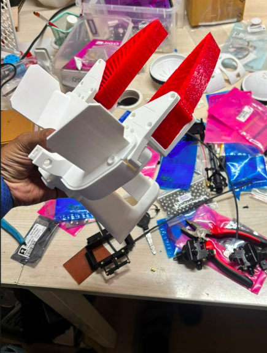

01 building umi
manipulation / 2026
- building a handheld UMI (Universal Manipulation Interface) gripper for collecting human demonstrations for robot learning
- exploring the mechanical design and actuation mechanisms behind the UMI, comparing design approaches such as UMI and TRUMI
- working towards a handheld interface for capturing synchronized motion and visual data during manipulation
